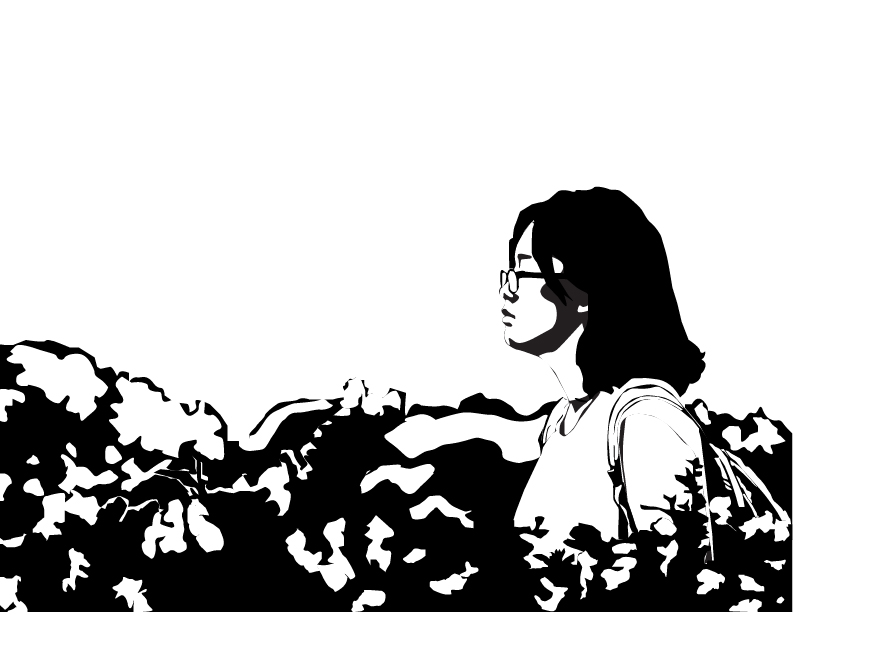

DMA
Vector Portrait
A black and white vector art of a picture. Created on Illustrator, 2018
While Starry Sky is my first collage I made using Photoshop, this black and white portrait is my first experience with Illustrator. The original picture was taken in August 2017, when I start study here in the States. The picture was taken by my dad while we visited a garden in San Fransisco. Turning a colored photo into just black and white piece is pretty challenging. I have to decide if a section is white or black. And choosing which neutral section to simpify is also nerve-wrecking.
Working with vector is a delicated work. Different from raster drawing, vector drawing require percision and patient. In exchange, vector drawing create a crisper and cleaner outcome despite multiple resizing.